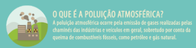

A produção de papel é uma atividade que gera um custo ambiental considerável, desde o desmatamento, que resulta no excesso de resíduos à poluição dos recursos. Alguns aspectos do impacto ambiental da produção de papel estão listados abaixo.
O desmatamento: uma das principais fontes de matéria-prima para a produção de papel é a madeira. A exploração de áreas florestais para obter madeira virgem tem efeitos imediatos diretos sobre os ecossistemas florestais, como perda de biodiversidade, degradação do solo e redução na capacidade de armazenamento de carbono das florestas.
Outro aspecto de recursos naturais é o consumo de fontes: além da madeira, a produção de papel necessita de grandes quantidades de água e energia.
Água e poluição do ar: as fábricas de papel geralmente liberam poluentes na água e no ar. Os efluentes descarregam produtos químicos utilizados no processo de fabricação, como cloro e compostos orgânicos, nos rios e lagos, prejudicando o ecossistema aquático e as comunidades que se beneficiam desses recursos hídricos para consumo humano, abastecimento de água para a agricultura, entre outros. Além disso, a poluição atmosférica gerada por substâncias como dióxido de enxofre e material particulado também pode ter efeitos sob a saúde humana e no ambiente.
Resíduos sólidos: a produção de papel gera muitos resíduos sólidos, como lodo de papel e subprodutos, juntamente com embalagens. A deposição inadequada desses resíduos pode levar à contaminação do solo e da água, além de contribuir para problemas de disposição inadequada de resíduos.
Alternativas sustentáveis: Para reduzir o impacto ambiental da produção de papel, são necessárias abordagens mais sustentáveis, como o uso de fibras recicladas, o investimento em processos de fabricação mais eficientes e limpos, a promoção de certificações florestais sustentáveis (como o FSC - Forest Stewardship Council) e a redução do consumo de papel por meio da digitalização e da adoção de práticas de consumo consciente.
-Em suma, a produção de papel tem um impacto ambiental significativo, mas medidas podem ser tomadas principalmente nessa ERA DA TECNOLOGIA em que vivemos para mitigar esses impactos e promover uma indústria mais sustentável e responsável ambientalmente.